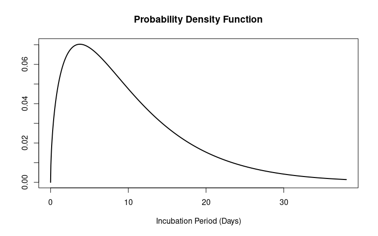

It is often the case that in an infectious disease outbreak epidemiological parameters are required in order to characterise and model the dynamics of disease transmission and evaluate control strategies. In those scenarios, epidemiological parameters are commonly retrieved from the literature, and there is currently no library of parameters in order to contrast and compare different reported parameters for a range of infectious diseases and pathogens, from different published studies over time, of which some may be meta-analyses.
The {epiparameter} R package is a library of epidemiological parameters, with classes to handle this data and a set of functions to manipulate and use epidemiological parameters and distributions. The package also contains functionality for converting and extracting distribution parameters from summary statistics.
Use case
An outbreak of a known or potentially novel pathogen is detected and the parameters and a delay distribution (e.g. incubation period or serial interval) is required.
{epiparameter} can provide these distributions from a selection of published sources in order to provide reliable epidemiological parameters.
This vignette will provide a introduction to the data stored within {epiparameter}, how to read it into R, manipulate the data, and the functions (and methods) implemented in the package to facilitate easy application of parameters into epidemiological pipelines.
The {distributional} package is loaded as some of the {epiparameter} methods use S3 generics from this package.
Code
Working with {epiparameter} data
{epiparameter} introduces three new classes for working with epidemiological parameters in R:
-
<epiparam>: library of epidemiolgical parameters -
<epidist>: singular set of epidemiolgical parameters -
<vb_epidist>: a singular set of epidemiolgical parameters for a vector-borne disease containing both an extrinsic and intrinsic distribution. This object contains two sets of parameters, one for the human (intrinsic) and one for the vector (extrinsic).
Library of epidemiological parameters
First, we will introduce the library, or database, of epidemiological parameters available from {epiparameter}. The <epiparam> class is introduced to enable users to easily explore the range of parameters that are available. The library can be read into R using the epiparam() function. By default all entries in the library are supplied.
Code
epi_dist_db <- epiparam()
epi_dist_db
#> Epiparam object
#> Number of distributions in library: 118
#> Number of diseases: 23
#> Number of delay distributions: 95
#> Number of offspring distributions: 10
#> Number of studies in library: 57
#> <Head of library>
#> disease epi_distribution prob_distribution
#> 1 Adenovirus incubation_period lnorm
#> 2 Chikungunya incubation_period lnorm
#> 3 COVID-19 hospitalisation_to_death weibull
#> 4 COVID-19 hospitalisation_to_death lnorm
#> 5 COVID-19 incubation_period <NA>
#> 6 COVID-19 incubation_period weibull
#> <112 more rows & 55 more cols not shown>The <epiparam> class has a custom printing method which gives a summary of the information included in the database including the number of distributions, number of diseases, number of different studies among other summary metrics, as well as the first six rows of the diseases, epidemiological distributions (epi_distribution) and probability distribution (prob_distribution).
The <epiparam> class is based (i.e. inherits from) the data frame, and therefore the same subsetting and manipulation can be carried out, including the head() and tail() of the database.
Code
head(epi_dist_db)[, 1:5]
#> disease pathogen epi_distribution author
#> 1 Adenovirus Adenovirus incubation_period Lessler_etal
#> 2 Chikungunya Chikungunya Virus incubation_period Rudolph_etal
#> 3 COVID-19 SARS-CoV-2 hospitalisation_to_death Linton_etal
#> 4 COVID-19 SARS-CoV-2 hospitalisation_to_death Linton_etal
#> 5 COVID-19 SARS-CoV-2 incubation_period Alene_etal
#> 6 COVID-19 SARS-CoV-2 incubation_period Bui_etal
#> title
#> 1 Incubation periods of acute respiratory viral infections: a systematic review
#> 2 Incubation periods of mosquito-borne viral infections: a systematic review
#> 3 Incubation Period and Other Epidemiological Characteristics of 2019 Novel Coronavirus Infections with Right Truncation: A Statistical Analysis of Publicly Available Case Data
#> 4 Incubation Period and Other Epidemiological Characteristics of 2019 Novel Coronavirus Infections with Right Truncation: A Statistical Analysis of Publicly Available Case Data
#> 5 Serial interval and incubation period of COVID-19: a systematic review and meta-analysis
#> 6 Estimation of the incubation period of COVID-19 in Vietnam
tail(epi_dist_db)[, 1:5]
#> disease pathogen epi_distribution author
#> 113 West Nile Fever West Nile Virus incubation_period Rudolph_etal
#> 114 West Nile Fever West Nile Virus incubation_period Rudolph_etal
#> 115 West Nile Fever West Nile Virus incubation_period Rudolph_etal
#> 116 Yellow Fever Yellow Fever Viruses incubation_period Rudolph_etal
#> 117 Yellow Fever Yellow Fever Viruses incubation_period Rudolph_etal
#> 118 Zika Virus Disease Zika Virus incubation_period Lessler_etal
#> title
#> 113 Incubation periods of mosquito-borne viral infections: a systematic review
#> 114 Incubation periods of mosquito-borne viral infections: a systematic review
#> 115 Incubation periods of mosquito-borne viral infections: a systematic review
#> 116 Incubation periods of mosquito-borne viral infections: a systematic review
#> 117 Incubation periods of mosquito-borne viral infections: a systematic review
#> 118 Times to key events in Zika virus infection and implications for blood donation: a systematic reviewThe epidemiological library contains quite a few different columns:
Code
colnames(epi_dist_db)
#> [1] "disease" "pathogen" "epi_distribution"
#> [4] "author" "title" "journal"
#> [7] "year" "sample_size" "region"
#> [10] "transmission_mode" "vector" "extrinsic"
#> [13] "prob_distribution" "inference_method" "mean"
#> [16] "mean_ci_limits" "mean_ci" "sd"
#> [19] "sd_ci_limits" "sd_ci" "quantile_2.5"
#> [22] "quantile_5" "quantile_25" "median"
#> [25] "median_ci_limits" "median_ci" "quantile_75"
#> [28] "quantile_87.5" "quantile_95" "quantile_97.5"
#> [31] "lower_range" "upper_range" "shape"
#> [34] "shape_ci_limits" "shape_ci" "scale"
#> [37] "scale_ci_limits" "scale_ci" "meanlog"
#> [40] "meanlog_ci_limits" "meanlog_ci" "sdlog"
#> [43] "sdlog_ci_limits" "sdlog_ci" "dispersion"
#> [46] "dispersion_ci_limits" "dispersion_ci" "precision"
#> [49] "precision_ci_limits" "precision_ci" "truncation"
#> [52] "discretised" "censored" "right_truncated"
#> [55] "phase_bias_adjusted" "notes" "PMID"
#> [58] "DOI"If subsetting of the <epiparam> object removes one of the crucial columns then the object is
converted to a data frame. Here removing the disease column causes the <epiparam> object
to be converted to a data frame. See the Epiverse-TRACE blog post on extending data frames for a more technical description.
Code
To see a full list of the diseases and distributions stored in the library use the
list_distributions() function. Here we show the first six rows of the output.
Code
head(list_distributions(epi_dist_db))
#> disease epi_distribution prob_distribution author year sample_size
#> 1 Adenovirus incubation_period lnorm Lessler_etal 2009 14
#> 2 Chikungunya incubation_period lnorm Rudolph_etal 2014 21
#> 3 COVID-19 incubation_period <NA> Alene_etal 2021 1453
#> 4 COVID-19 incubation_period weibull Bui_etal 2020 19
#> 5 COVID-19 incubation_period <NA> Elias_etal 2021 28675
#> 6 COVID-19 incubation_period lnorm Lauer_etal 2020 181More details on the data collation and the library of parameters can be found in the Data Collation and Synthesis Protocol vignette.
Single set of epidemiolgical parameters
The second class introduced in the {epiparameter} package is the <epidist> class. This holds a single set of epidemiological parameters.
An <epidist> object can be converted from one of the rows of the <epiparam> object or can be created manually. First we will show the conversion of <epiparam> → <epidist>. This uses the as_epidist() function.
Code
# find entry for COVID-19
epi_dist_covid <- epi_dist_db[which(epi_dist_db$disease == "COVID-19"), ]
# find entry for COVID-19 incubation period
epi_dist_covid_incub <- epi_dist_covid[which(epi_dist_covid$epi_distribution == "incubation_period"), ] # nolint
# select one of the COVID-19 incubation period
covid_incub <- epi_dist_covid_incub[10, ]
# convert epiparam entry to epidist
covid_incub <- as_epidist(covid_incub)
#> Using Linton, etal (2020). "Incubation Period and Other Epidemiological
#> Characteristics of 2019 Novel Coronavirus Infections with Right
#> Truncation: A Statistical Analysis of Publicly Available Case Data."
#> _Journal of Clinical Medicine_. doi:10.3390/jcm9020538
#> <https://doi.org/10.3390/jcm9020538>.
#> To retrieve the citation use the 'get_citation' function
covid_incub
#> Disease: COVID-19
#> Pathogen: SARS-CoV-2
#> Epi Distribution: incubation period
#> Study: Linton, etal (2020). "Incubation Period and Other Epidemiological
#> Characteristics of 2019 Novel Coronavirus Infections with Right
#> Truncation: A Statistical Analysis of Publicly Available Case Data."
#> _Journal of Clinical Medicine_. doi:10.3390/jcm9020538
#> <https://doi.org/10.3390/jcm9020538>.
#> Distribution: lnorm
#> Parameters:
#> meanlog: 1.525
#> sdlog: 0.629The <epidist> object also has a custom printing method which shows the disease, pathogen (if known), the epidemiological distribution, a short citation of the study the parameters are from and the probability distribution and parameter of that distribution (if available).
The opposite conversion from <epidist> to <epiparam> can also be achieved using as_epiparam().
Code
as_epiparam(covid_incub)
#> Epiparam object
#> Number of distributions in library: 1
#> Number of diseases: 1
#> Number of delay distributions: 1
#> Number of offspring distributions: 0
#> Number of studies in library: 1
#> <Head of library>
#> disease epi_distribution prob_distribution
#> 1 COVID-19 incubation_period lnorm
#> <0 more rows & 55 more cols not shown>There are two alternatives to reading in <epiparam> objects and subsetting to <epidist>.
- Extract an
<epidist>directly from the library withepidist_db(). - Create
<epidist>manually with constructor function.
The epidist_db() allows direct subsetting of the library and returns an <epidist> of a
single set of epidemiological parameters.
Code
epidist_db(
disease = "COVID-19",
epi_dist = "incubation_period",
author = "Bui_etal"
)
#> Using Bui, etal (2020). "Estimation of the incubation period of COVID-19 in
#> Vietnam." _PLoS One_. doi:10.1371/journal.pone.0243889
#> <https://doi.org/10.1371/journal.pone.0243889>.
#> To retrieve the citation use the 'get_citation' function
#> Numerical approximation used, results may be unreliable.
#> Disease: COVID-19
#> Pathogen: SARS-CoV-2
#> Epi Distribution: incubation period
#> Study: Bui, etal (2020). "Estimation of the incubation period of COVID-19 in
#> Vietnam." _PLoS One_. doi:10.1371/journal.pone.0243889
#> <https://doi.org/10.1371/journal.pone.0243889>.
#> Distribution: weibull
#> Parameters:
#> shape: 2.217
#> scale: 7.226Additionally to using entries from the {epiparameter} library, <epidist> objects can be manually created.
This may be especially useful if new parameter estimates become available but are not yet incorporated into the library.
Benefit of <epidist>
By providing a consistent and robust object to store epidemiological parameters, <epidist> objects can be applied in epidemiological pipelines, for example {episoap}. The data contained within the object (e.g. parameter values, pathogen type, etc.) can be modified but the pipeline will operate as the class is unchanged.
The probability distribution (prob_distribution) argument requires the distribution specified in the standard R naming. In some cases these are the same as the distribution’s name, e.g., gamma and weibull. Examples of where the distribution name and R name differ are lognormal and lnorm, negative binomial and nbinom, geometric and geom, and poisson and pois. Extra arguments are also available in epidist() to add information on uncertainty and citation information.
Adding library entries
If a set of epidemiological parameter has been inferred and known to the user but has not yet been incorporated into the {epiparameter} database, these parameters can be manually added to the library.
To add entries to the library the bind_epiparam() function appends a row to an existing <epiparam> object using either an <epiparam>, <epidist> or data frame.
Code
bind_epiparam(epiparam = epi_dist_db, epi_obj = ebola_incubation)
#> Epiparam object
#> Number of distributions in library: 119
#> Number of diseases: 24
#> Number of delay distributions: 96
#> Number of offspring distributions: 10
#> Number of studies in library: 58
#> <Head of library>
#> disease epi_distribution prob_distribution
#> 1 Adenovirus incubation_period lnorm
#> 2 Chikungunya incubation_period lnorm
#> 3 COVID-19 hospitalisation_to_death weibull
#> 4 COVID-19 hospitalisation_to_death lnorm
#> 5 COVID-19 incubation_period <NA>
#> 6 COVID-19 incubation_period weibull
#> <113 more rows & 55 more cols not shown>
bind_epiparam(epiparam = epi_dist_db, epi_obj = as_epiparam(ebola_incubation))
#> Epiparam object
#> Number of distributions in library: 119
#> Number of diseases: 24
#> Number of delay distributions: 96
#> Number of offspring distributions: 10
#> Number of studies in library: 58
#> <Head of library>
#> disease epi_distribution prob_distribution
#> 1 Adenovirus incubation_period lnorm
#> 2 Chikungunya incubation_period lnorm
#> 3 COVID-19 hospitalisation_to_death weibull
#> 4 COVID-19 hospitalisation_to_death lnorm
#> 5 COVID-19 incubation_period <NA>
#> 6 COVID-19 incubation_period weibull
#> <113 more rows & 55 more cols not shown>Note that this only adds the parameters to the library (<epiparam> object) in the environment, and does not save to the database file in the package.
Distribution functions
<epidist> objects store distributions, and mathematical functions of these distribution can easily be extracted directly from them. It is commonly required to extract the probability density function, cumulative distribution function, quantile or generate random numbers from the distribution in the <epidist> object. The distribution functions in {epiparameter} allow users to easily access these aspects.
Code
density(ebola_incubation, at = 0.5)
#> [1] 0.1902978
cdf(ebola_incubation, q = 0.5)
#> [1] 0.04521373
quantile(ebola_incubation, p = 0.5)
#> [1] 2.718282
generate(ebola_incubation, times = 10)
#> [1] 0.6077366 1.1605780 1.8535819 0.4642578 0.6912292 0.4436173
#> [7] 3.3627122 4.2987837 13.9632557 1.1749981Plotting epidemiological distributions
<epidist> objects can easily be plotted to see the PDF and CDF of distribution.
Code
plot(ebola_incubation)
The default plotting range for time since infection is from zero to ten days. This can be altered by specifying the day_range argument when plotting an <epidist> object.
Code
plot(ebola_incubation, day_range = 1:25)This plotting function can be useful for visually comparing epidemiological distributions from different publications on the same disease. In addition, plotting the distribution after manually creating an <epidist> help to check that the parameters are sensible and produce the expected distribution.
Parameter conversion and extraction
Conversion
Parameters are often reported as mean and standard deviation (or variance). These can be (analytically) converted to the parameters of the distribution using the conversion function in the package (convert_summary_stats_to_params()). We also provide conversion functions in the opposite direction, parameters to summary statistics (convert_params_to_summary_stats()).
Extraction
The functions extract_param() handles all the extraction of parameter estimates from summary statistics. The two extractions currently supported in {epiparameter} are from percentiles and from median and range.
Contributing to {epiparameter}
The library of epidemiological parameters is a living database, as new studies are published we hope to incorporate these. Due to the large time requirement of searching for and recording parameters in the database we welcome others to add parameters to the contributing spreadsheet. These will be incorporated into the database by the package maintainers. See the Data Collation and Synthesis Protocol vignette on information about contributing to the library of epidemiological parameters.